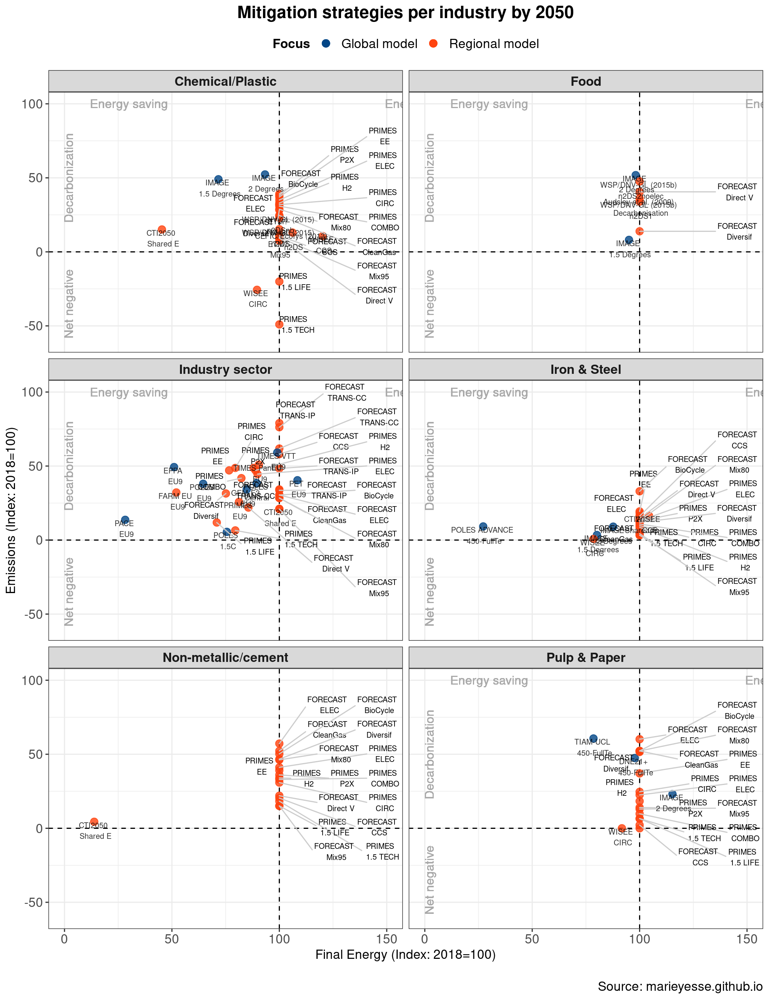

Comparing quantitative industry decarbonization perspectives towards 2050 for Europe
Mariësse van Sluisveld, Harmen Sytze de Boer, Andries Hof, Clemens Schneider, Stefan Lechtenböhmer, Detlef van Vuuren
- PBL Netherlands Environmental Assessment Agency, The Hague, The Netherlands
- Copernicus Institute of Sustainable Development, Utrecht University, Utrecht, the Netherlands
- Wuppertal Institute, Wuppertal, Germany
This is very preliminary work on collecting, compiling and analysing various long-term pathways for industry. Be aware of the fact that data can still be missing and errors can still be present in the results.
Summary Global climate ambitions are underpinned by multiple model-based scenario studies. These scenario studies outline possible societal response strategies along the global climate ambitions. Interestingly, while many perspectives exist on how the power sector can adapt, the same suite of scenario studies remain very vague on the level of manufacturing industries. In this study we take stock of the literature on industry decarbonization towards 2050. Results underscore the importance of beyond-energy solution strategies, such as circularity and lifestyle change, to reach deep decarbonization at several basic industries. Further unpacking of industry developments is required and possible but needs greater availability of information.
Extended abstract
1. Introduction
To limit global average temperature increase to well below 2°C relative to pre-industrial levels requires efforts in all sectors worldwide. Much of the anticipated mitigation potential for meeting this goal is ascribed by complex integrated systems models to the power sector, with many studies elaborating on the various configurations and dependencies towards that end point (Clarke et al., 2014; Rogelj et al., 2018). However, interestingly, the same complex systems model studies provide less detailed descriptions about other (end-use) sectors, despite them covering the other half of total emissions in the (global) economy. Particularly the industry sector could benefit from more detailed analyses as this sector faces a variety of challenges next to those related to the combustion of fuels (e.g. due to process-related emissions, embedded carbon and losses throughout complex value chains, long capital lifetimes, etc.). This is also structurally recognized in science, policy and in the corporate environment, which are simultaneously calling for an greater integrative long-term perspective and a coherent EU regulatory framework (Ruby et al., 2018).
To better address the potential future challenges and opportunities of high-carbon industries in Europe, a broader overview of industry decarbonization perspectives towards 2050 is needed. To fill this gap, we have collected and systematically compared a broad range of recently published quantified perspectives on industry decarbonization towards 2050.
2. Methods
2.1 Study selection
A broad analytical spectrum is represented in the field of industry decarbonization. For this study we specifically focus on studies encompassing optimisation, simulation and engineering modelling frameworks that are used to underpin various long-term perspectives for industry. For comparative purposes we have collected (see Table 1 for an overview):
- The output of various European Union funded research projects (EMF28, (Weyant et al., 2013); ADVANCE, www.fp7-advance.eu; SET-Nav, www.set-nav.eu; and REINVENT, www.reinvent-project.eu) as these offered a broad collection long-term studies by integrated assessment models representing industry within the context of a carbon-constrained economy or more bottom-up models with more in-depth knowledge on production processes or value-chains;
- Other influential studies such as the World Energy Outlook (OECD/IEA, 2018) and the EU long-term strategic vision (EC, 2018);
- (Grey) literature on industry decarbonization in Europe, selecting industry published roadmaps that contain quantified information towards 2050.
The presented overview is not considered to be exhaustive, but rather an opportunity-driven pool of pre-existing decarbonization perspectives for industry to represent “the best available knowledge”.
2.2 Scenario selection
The selected studies present a range of scenario narratives on economy or industry decarbonization. Although the analyzed decarbonization perspectives vary across studies, in general scenarios have been selected that aligned to either:
- The Paris climate agreement (limiting global warming to 1.5°C and 2°C by 2100) or
- The European Unions’ greenhouse gas mitigation target (reducing emissions to 80%-95%) or
- A 100% emission reduction target which is associated with a 1.5°C climate ambition.
If available, variations to the archetypical mitigation scenario have been included as well (e.g. favouring the selection or absence of a key technology, or differences in consumer choices and governance).
Table 1 - Overview of studies on industry decarbonization, the analytical framework underpinning the study and the level of industry detail it has included.

3. Results
In comparing the decarbonization pathways for individual basic industries we focus on key macro-change indicators which are commonly reported across the studies: CO2 emissions and total final energy use (see figure 1). In general, the decarbonization pathways show a decline in CO2 emission levels over time. Depending on the ambition level assumed, this can result in 25% to 150% emission reductions by 2050 across the sectors. Deep decarbonization potential is particularly depicted to be available in the non-energy sector and the pulp & paper sector. For total final energy use, the general trend is focused at energy efficiency throughout all basic industries, although some decarbonization studies assume an increase in energy use.
The more detailed regional and/or sectoral models in this example show larger deep decarbonization potentials than the global models for the non-energy sector, non-metallic/cement and pulp & paper sectors. Particularly scenarios that put greater emphasis on circularity, CCS and lifestyle change manage to produce deeper decarbonization or negative emission pathways for industry than those that do not.

Figure 1 - Overview of decarbonization strategies per manufacturing industry and class of model. Two data points go off-screen in the Pulp & Paper sector as a result of biogenic carbon capture and storage. PRIMES and FORECAST studies as reported in EC (2018) and Hartner et al. (2019) did not include information on Final Energy use with a reference to a start year and have been fixed to 100.
4. Discussion and conclusions
Future energy modelling should move towards adopting beyond-energy solution strategies as part of their portfolio of mitigation strategies for industry The global integrated assessment models maintain more abstract strategies towards industry decarbonization, resulting into more conservative estimates of mitigation potential. The more bottom-up models, albeit without a broader integrated perspective, are able to represent a wider range of mitigation strategies on the level of specific industries (by including more detailed process innovations, such as hydrogen-based steel making and process integration (e.g. circularity). Tailoring mitigation strategies to an industry sector may thus open up further decarbonization potential.
Greater data valorisation is required at both the suppliers and users of industry decarbonization perspectives towards 2050 In order to prevent a fossil lock-in of industry, the research on future industry decarbonization strategies needs to further unpack and explore the available leeway for the hard-to-abate sectors. No system exists to date to collect and harmonize information on a more detailed level, leading to a wide variety of ways to account for and report on industry (different scales, levels of aggregation, starting years, end years, targets and assumptions etc.). As such, community work is needed to (1) harmonize definitions and boundary conditions for sectors and transitions accounting, (2) compile industry technology/ process portfolios & assumptions, and (3) collect scenario narratives and outcomes for broader community learning and shared knowledge creation. The current work provides a first step into this direction.
References
- CEFIC/Ecofys, 2013. European chemistry for growth - unlocking a competititve, low carbon and energy efficient future.
- Clarke, L., Jiang, K., Akimoto, K., Babiker, M., Blanford, G., Fisher-Vanden, K., Hourcade, J.-C., Krey, V., Kriegler, E., Löschel, A., McCollum, D., Paltsev, S., Rose, S., Shukla, P.R., Tavoni, M., van der Zwaan, B.C.C., van Vuuren, D.P., 2014. Assessing Transformation Pathways. In: Climate Change 2014: Mitigation of Climate Change. Contribution of Working Group III to the Fifth Assessment Report of the Intergovernmental Panel on Climate Change. [Edenhofer, O., R. Pichs-Madruga, Y. Sokona, E. Farahani, S. Kadner, K. Seyboth, A. Adler, I. Baum, S. Brunner, P. Eickemeier, B. Kriemann, J. Savolainen, S.Schlömer, C. von Stechow, T. Zwickel and J.C. Minx (eds.)]. Cambridge University Press, Cambridge, United Kingdom and New York, NY, USA.
- ClimateWorks Foundation/ECF, 2018. The CTI 2050 Roadmap Tool project, https://stakeholder.netzero2050.eu.
- EC, 2018. In-depth analysis in support of the Commission Communication Com(2018) 773 - A clean planet for all, a European long-term strategic vision for a prosperous, modern, competitive and climate neutral economy.
- Edelenbosch, O.Y., Kermeli, K., Crijns-Graus, W., Worrell, E., Bibas, R., Fais, B., Fujimori, S., Kyle, P., Sano, F., van Vuuren, D.P., 2017. Comparing projections of industrial energy demand and greenhouse gas emissions in long-term energy models. Energy 122, 701-710.
- Förster, H., Schumacher, K., De Cian, E., HÜBler, M., Keppo, I., Mima, S., Sands, R.D., 2013. European energy efficiency and decarbonization strategies beyound 2020 - a sectoral multi-model decomposition. Climate Change Economics 04, 1340004.
- Hartner, M., Forthuber, S., Kranzl, L., Fritz, S., Aichinger, E., Müller, A., Herbst, A., Fleiter, T., Rehfeldt, M., Heitel, S., Krail, M., Köhler, J., Bernath, C., F., S., 2019. D.5.8: WP5 Summary report - Energy Systems: Demand perspective in: SET-Nav, H.p. (Ed.), http://www.set-nav.eu/sites/default/files/common_files/deliverables/D5.8%20SET-Nav_WP5_Summary_report_final.pdf.
- OECD/IEA, 2009. Energy Technology Transitions for Industry, https://www.iea.org/publications/freepublications/publication/industry2009.pdf.
- OECD/IEA, 2017. Energy Technology Perspectives - catalysing energy technology transformations.
- OECD/IEA, 2018. World Energy Outlook 2018, www.iea.org.
- Rogelj, J., Shindell, D., Jiang, K., Fifita, S., Forster, P., Ginzburg, V., Handa, C., Kheshgi, H., Kobayashi, S., Kriegler, E., Mundaca, L., Séférian, R., Vilariño, M.V., 2018. Mitigation Pathways Compatible with 1.5°C in the Context of Sustainable Development, In: Global Warming of 1.5°C. An IPCC Special Report on the impacts of global warming of 1.5°C above pre-industrial levels and related global greenhouse gas emission pathways, in the context of strengthening the global response to the threat of climate change, sustainable development, and efforts to eradicate poverty [Masson-Delmotte, V., P. Zhai, H.-O. Pörtner, D. Roberts, J. Skea, P.R. Shukla, A. Pirani, W. Moufouma-Okia, C. Péan, R. Pidcock, S. Connors, J.B.R. Matthews, Y. Chen, X. Zhou, M.I. Gomis, E. Lonnoy, T. Maycock, M. Tignor, and T. Waterfield (eds.)]. In Press.
- Ruby, K., Coppenholle, K., Mensink, M., Batier, R., Lhôte, S., Despotou, E., Van Lierde, I., Thiran, G., Eggert, A., Cooper, J., Hansen, J., Cazes, B., 2018. Eurelectric and Energy-Intensive Industries call for an ambitious and comprehensive EU Industrial Strategy to enable industry’s contribution to the EU long-term GHG goals, in: Industries, E.a.E.-I. (Ed.).
- Van Sluisveld, M.A.E., De Boer, H.S., Hof, A.F., van Vuuren, D.P., Schneider, C., Lechtenboehmer, S., 2018. EU decarbonisation scenarios for industry - Deliverable 4.2, https://static1.squarespace.com/static/59f0cb986957da5faf64971e/t/5b3fdf266d2a73e319355e0c/1530912585721/D4.2+EU+decarbonisation+scenarios+for+industry.pdf.
- Weyant, J., Knopf, B., De Cian, E., Keppo, I., van Vuuren, D.P., 2013. Introduction to the EMF28 Study on scenarios for transforming the European energy system. Climate Change Economics 4, 1302001.
- WSP Parsons Brunckerhoff / DNV GL, 2015a. Industrial Decarbonisation & Energy Efficiency Roadmaps to 2050 - Food and Drink.
- WSP Parsons Brunckerhoff / DNV GL, 2015b. Industrial Decarbonisation & Energy Efficiency Roadmaps to 2050 - Iron and Steel.
- WSP Parsons Brunckerhoff / DNV GL, 2015c. Industrial Decarbonisation & Energy Efficiency Roadmaps to 2050 – Pulp and Paper.
Contact: mariesse.vansluisveld@pbl.nl